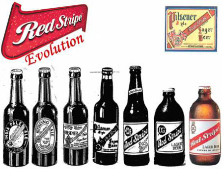
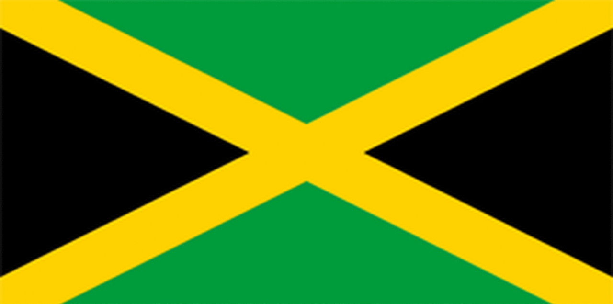

On a small island in the Caribbean Sea, bursting with flavours of rum, reggae and beautiful beaches, this long-standing cultural classic is brewed to perfection. Since 1918 Desnoes and Geddes Company have been a big part of the Jamaican life, first producing soft drinks and selling imported beer, but then following the owners, Thomas Hargreaves Geddes and Eugene Desnoes, dream of open the first brewery in Jamaica. A decade later and the Surrey Brewery was opened for business and brewed the first ever Red Stripe beer. After the initial brewing, Red Stripe spent the next few years morphing into different types of beer, till an American brewer in financial trouble sold the Red Stripe pale ale recipe to Desnoes and Geddes British investors. By 1934 Paul Geddes (son of Thomas Geddes) and Bill Martindale produced the first iteration of the Pale Ale Red Stripe beer, and Jamaica took notice. Since 1918 Desnoes and Geddes wanted to move into the brewing industry, since both men had great success with soft drinks, they wanted to make a beer that Jamaica could be proud of calling its own. Jamaica was still under British rule when the company opened and imported all the countries beer, but Red Stripe was taking a hold of Jamaica with its delicious taste and cheap price. The English imports were losing sales to Red Stripes, so as a way of retaliating in 1935 a local goods tax was placed on specific goods, including local beer. But thanks to the public outcry about the tax, it was quietly repealed, until 5 years later when the British were able to impose the tax once World War II started. Simply stating that Jamaica would have to pay their share of the war. With war comes the troops, so with troops coming to Jamaica from Canada and the United States the exposure to Red Stripe was increasing as well as the sales.
Since 1918 Desnoes and Geddes wanted to move into the brewing industry, since both men had great success with soft drinks, they wanted to make a beer that Jamaica could be proud of calling its own. Jamaica was still under British rule when the company opened and imported all the countries beer, but Red Stripe was taking a hold of Jamaica with its delicious taste and cheap price. The English imports were losing sales to Red Stripes, so as a way of retaliating in 1935 a local goods tax was placed on specific goods, including local beer. But thanks to the public outcry about the tax, it was quietly repealed, until 5 years later when the British were able to impose the tax once World War II started. Simply stating that Jamaica would have to pay their share of the war. With war comes the troops, so with troops coming to Jamaica from Canada and the United States the exposure to Red Stripe was increasing as well as the sales.
By 1962 when Jamaica gained independence from the United Kingdom, Red Stripe was the beer of choice for celebrating, but the company was hard at work, looking to expand into different countries and rebrand itself for the international market.
The most iconic and recognizable feature of the Red Stripe is the Stubby bottle, which once introduced in 196,5 took off for the brand. Using the stubby bottle turned some consumers off till they were shown you get the same amount of beer in a stubby bottle as a long-necked bottle. The stubby bottle would become an integrated part of the brand, or even the bottle became the brand.
When opening brewing to the United Kingdom in 1976, the recipe was the same, but the famous stubby bottle was not being used internationally, yet. The America market didn’t take as kindly to the non stubby bottles when Red Stripe made its first appearance as an import in the American market. Trying to mimic Heineken with their green tall bottles, many America’s thought the flavour wouldn’t be the same as the stubby Red Stripe beer they’ve had while vacationing in Jamaica. Eventually Red Stripe’s iconic stubby bottle would make its way into the international market, giving consumers that familiar look and refreshing Jamaican feel.
The nineties brought more success to Red Stripe, growing in popularity with dance hall and reggae music. Red Stripe has maintained its strong connection with the music industry, promoting artist, reggae or ska concerts, as well as sponsoring Reggae Sumfest. Red Stripe’s music connection doesn’t stop at the Caribbean Sea, the brand has a solid network in the United Kingdom’s underground music, sponsoring events such as Camden Crawl and the Great Escape, promoting underground artist along with more well-known artist.
Although Jamaica gained their independence in 1962, their connection with the United Kingdom has been maintained, and once the brewery in the United Kingdom figured out how to maintain the same great taste of Red Stripe but in draught form, the brand quickly moved across Europe.

Investing in the export market was a big goal for Heineken, but with the move back to Jamaica came the chance to use more locally sourced materials. Five Points Trading Company (Heineken USA) General Manager, Charles Littlefield has stated that Red Stripe has a strong commitment to Jamaica, and “Although Heineken has a global footprint, it remains a family owned company that is dedicated to supporting the local economies where its brands are brewed. Developing a plan that benefits Jamaica, its people and the environment over the long term was integral to the strategic planning process.” To achieve their goal of using more locally sourced materials, in 2013 Red Stripe started a new initiative called Project Grow.
Project Grow is aiming to use less imported products, including maltose corn syrup, so they are increasing the volume of locally sourced Cassava to 40% by 2020. As of 2017 Project Grow has trained 98 young people in cassava farming techniques. These farmers are now employed by Red Stripe to work on some of the farms they are operating in St. Catherine and Calrendon, Jamaica. Red Stripe has also contracted out to third-party farmers that had at least 1,300 acres of land for cassava growth. 80% of the third-party farmers with Project Grow received “farmers kits” containing the highest quality products and provide continuous training.